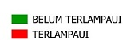

<!DOCTYPE html>
<html lang="en">
  <head>
    <!-- Metadata -->
    <meta charset="utf-8">
    <meta name="viewport" content="initial-scale=1,user-scalable=no,maximum-scale=1,width=device-width">
    <meta name="mobile-web-app-capable" content="yes">
    <meta name="apple-mobile-web-app-capable" content="yes">

    <!-- Judul pada tab browser -->
    <title>D3TLH BOLMONG</title>

    <!-- Leaflet CSS Library -->
    <link rel="stylesheet" href="https://unpkg.com/leaflet@1.6.0/dist/leaflet.css">
    <!-- Geolocation CSS Library -->
    <link rel="stylesheet" href="https://api.tiles.mapbox.com/mapbox.js/plugins/leaflet-locatecontrol/v0.43.0/L.Control.Locate.css">
    <!-- Font Awesome CSS Library -->
    <link rel="stylesheet" href="https://maxcdn.bootstrapcdn.com/font-awesome/4.7.0/css/font-awesome.min.css">

    <!-- Style untuk tampilan peta fullscreen -->
    <style>
      html, body, #map {
        height: 100%;
        width: 100%;
        margin: 0px;
      }
    </style>
    <style>
        .no-js #loader { display: none;  }
        .js #loader { display: block; position: absolute; left: 100px; top: 0; }
        .se-pre-con {
          position: fixed;
          left: 0px;
          top: 0px;
          width: 100%;
          height: 100%;
          z-index: 9999;
          background: url(img/preloader_2.gif) center no-repeat #fff;
        }
    </style>

  </head>

  <body>
    <!-- Leaflet JavaScript Library -->
    <script src="https://unpkg.com/leaflet@1.6.0/dist/leaflet.js"></script>
    <script src="https://code.jquery.com/jquery-2.1.4.min.js"></script>
    <!-- Geolocation Javascript Library -->
    <script src="https://api.tiles.mapbox.com/mapbox.js/plugins/leaflet-locatecontrol/v0.43.0/L.Control.Locate.min.js"></script>
    <script src="https://ajax.googleapis.com/ajax/libs/jquery/2.2.4/jquery.min.js"></script>
    <script src="http://cdnjs.cloudflare.com/ajax/libs/modernizr/2.8.3/modernizr.js"></script>

    <div class="se-pre-con"></div>
    <!-- HTML Block untuk menampilkan peta -->
    <div id="map"></div>
    
    <script>

      // Wait for window load
      $(window).load(function() {
        // Animate loader off screen
        $(".se-pre-con").fadeOut("slow");;
      });
      /* Initial Map */
      var map = L.map('map').setView([0.6,124],10); //lat, long, zoom
      map.setMaxBounds(map.getBounds());
      
      /* Tile Basemap */
      var basemap = L.tileLayer('https://{s}.tile.openstreetmap.org/{z}/{x}/{y}.png', {
        attribution: '<a href="https://www.openstreetmap.org/copyright">OpenStreetMap</a> | Oblique GIS 2019'
      });
      var GoogleSatellite = L.tileLayer('https://{s}.google.com/vt/lyrs=s&x={x}&y={y}&z={z}', {
        maxZoom: 20,
      subdomains:['mt0','mt1','mt2','mt3'],
      attribution: 'Google Satellite  | Oblique GIS 2019'
      });
      GoogleSatellite.addTo(map); //Memanggil basemap untuk ditampilkan ketika halaman dipanggil

    /* GeoJSON Polygon */
    var stsair = L.geoJson(null, {
      style: function (feature) {
        return {
          fillColor: layerColors[feature.properties.STATUS],
          fillOpacity:0.8,
          weight: 0,
        };
      }
    });
    $.getJSON("data/air.geojson", function (data) {    //Lokasi data geojson
      stsair.addData(data);
    });

    var stspangan = L.geoJson(null, {
      style: function (feature) {
        return {
          fillColor: layerColors[feature.properties.STATUS],
          fillOpacity:0.8,
          weight: 0,
        };
      }
    });
    $.getJSON("data/pangan.geojson", function (data) {    //Lokasi data geojson
      stspangan.addData(data);
    });

    var layerColors = {"TERLAMPAUI":"#ff0000", "BELUM TERLAMPAUI":"#009900"};

    var baseMaps = { //list basemap
      'Open Street Map': basemap,
      'Google Satellite': GoogleSatellite,
    };
    var Layers = {  //list layer
      'Status Daya Dukung Air <br> ': stsair,
      'Status Daya Dukung Pangan <br> ':stspangan,
    };
    var layerControl = L.control.layers(baseMaps, Layers, {collapsed:true});
    layerControl.addTo(map);

    var locateControl = L.control.locate({
      position: "topleft",
      drawCircle: true,
      follow: true,
      setView: true,
      keepCurrentZoomLevel: false,
      markerStyle: {
        weight: 1,
        opacity: 0.8,
        fillOpacity: 0.8,
      },
      circleStyle: {
        weight: 1,
        clickable: false,
      },
      icon: "fa fa-map-marker",
      metric: true,
      strings: {
        title: "Klik untuk mengetahui lokasimu",
        popup: "Lokasimu sekarang di sini. Akurasi {distance} {unit}",
        outsideMapBoundsMsg: "Kamu berada di luar area peta"
      },
      locateOptions: {
        maxZoom: 15,
        watch: true,
        enableHighAccuracy: true,
        maximumAge: 10000,
        timeout: 10000
      }
    }).addTo(map);

    L.control.scale({
      maxWidth: 150,
      imperial: true,
    }).addTo(map);

    L.Control.Watermark = L.Control.extend({
      onAdd: function(map) {
        var img = L.DomUtil.create('img');
        img.src = 'img/oblique.png';
        img.style.width = '120px';
        return img;
      },
      onRemove: function(map) {
        // Nothing to do here
      }
    });
    L.control.watermark = function(opts) {
      return new L.Control.Watermark(opts);
    }
    L.control.watermark({ position: 'bottomright' }).addTo(map);

    </script>
  </body>
</html>
